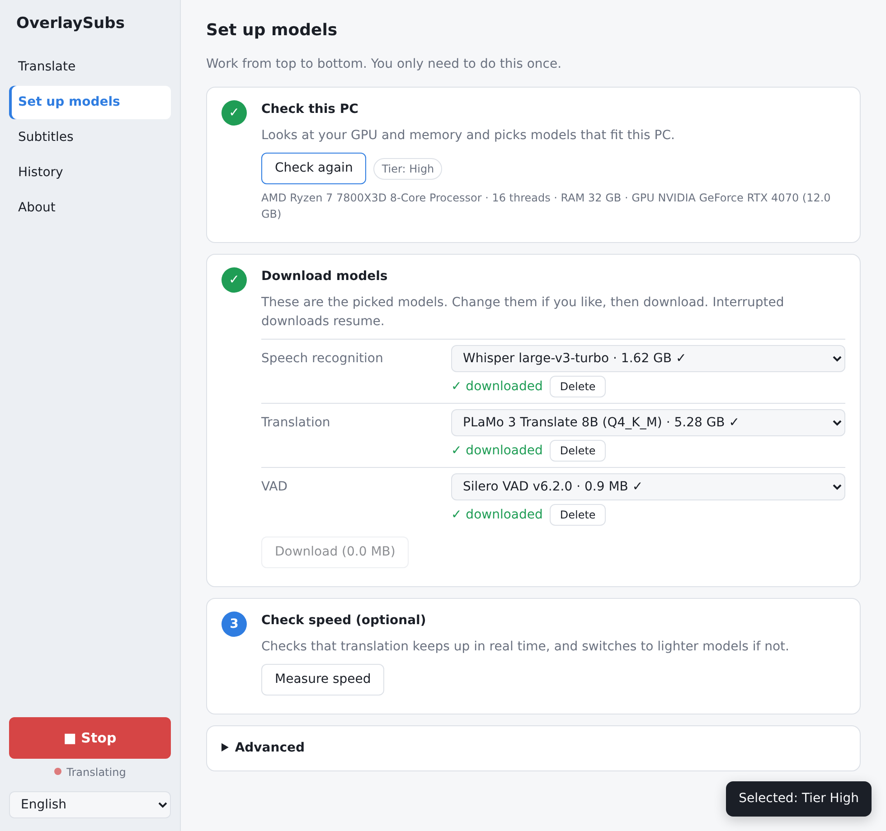
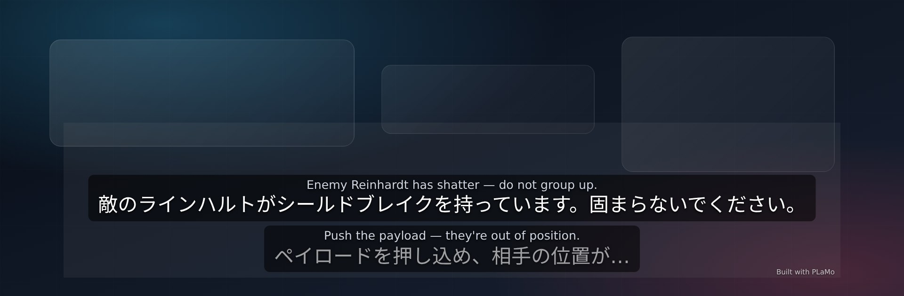
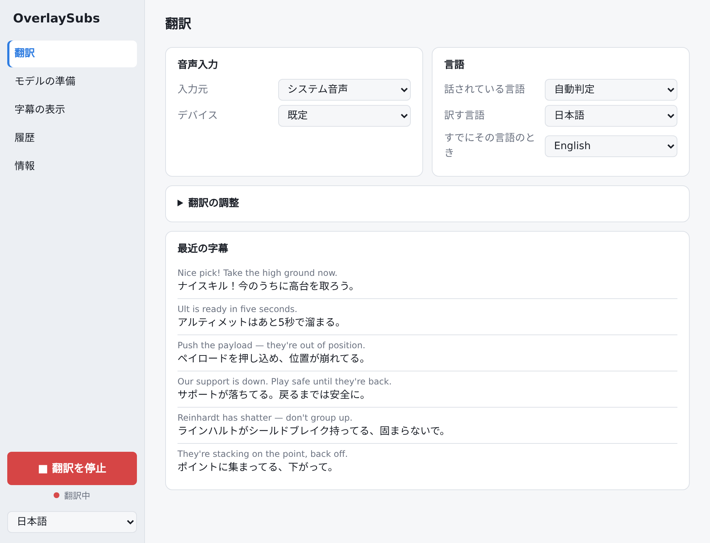

ダウンロード
お使いの PC に合ったファイルを選んでください。GitHub のアカウントは不要です。 ボタンを押すと最新版のダウンロードがすぐに始まります。
-
Windows 版（推奨）Windows 10 / 11（64bit）ダウンロード（.exe）
ダウンロードした
.exeを実行するだけのインストーラです。通常はこちらを選んでください。overlaysubs-windows-x64-setup.exe
-
macOS 版macOS 13 Ventura 以降ダウンロード（.dmg）
Apple Silicon（M1 / M2 / M3 / M4）用です。
.dmgを開いてアプリケーションへドラッグします。Intel Mac 版はありません。overlaysubs-macos-arm64.dmg
-
Windows 版（MSI）Windows 10 / 11（64bit）ダウンロード（.msi）
MSI は管理者権限（全ユーザー向け）でインストールされます。社内配布などで MSI が必要な場合の代替形式です。通常は上の .exe を使ってください。
overlaysubs-windows-x64.msi
チェックサム（SHA-256）: SHA256SUMS.txt。 過去のバージョンを含むリリース一覧: GitHub Releases
SHA-256 を確認する（任意）
ダウンロードしたファイルが壊れていないか確認できます。表示された値を SHA256SUMS.txt の値と比べてください。
Windows（PowerShell）
Get-FileHash .\overlaysubs-windows-x64-setup.exe -Algorithm SHA256macOS（ターミナル）
shasum -a 256 overlaysubs-macos-arm64.dmgインストールは 3 ステップ
初回だけモデルのダウンロードに数分〜十数分かかります。2 回目以降はすぐに翻訳を始められます。
-
ダウンロード
上の一覧から、お使いの PC に合ったファイルをクリックします。
-
実行
Windows は
.exeを実行、macOS は.dmgを開いて「OverlaySubs」を「アプリケーション」にドラッグします。 -
初回セットアップ
起動して利用規約に同意 →「PC の性能を調べる」→「モデルをダウンロード」。終われば準備完了です。
警告が表示されたとき
配布しているビルドは未署名・未公証です（Windows はコード署名なし、macOS は Developer ID 署名なし・公証なしで ad-hoc 署名のみ）。 そのため初回起動時に OS が警告（Windows の SmartScreen / スマートスクリーン、macOS の Gatekeeper / ゲートキーパー）を出しますが、アプリ自体に問題があるという意味ではありません。 次の手順で起動できます。
重要: Gatekeeper（ゲートキーパー）や SmartScreen（スマートスクリーン）をシステム全体で無効にしないでください。このアプリだけを個別に許可する、下記の手順を使ってください。
macOS 15 以降では右クリック →「開く」の回避操作が廃止されているため、システム設定からの操作が必要です。環境によっては「開発元を確認できません」と表示されます。
Windows: 「Windows によって PC が保護されました」
- 青い画面の 「詳細情報」 をクリックします。
- 表示された 「実行」 ボタンをクリックします。
macOS: 「開発元を検証できません」/「…は開いていません」
- Finder で OverlaySubs を右クリック（または Control キーを押しながらクリック） → 「開く」 → 確認ダイアログで 「開く」。
- それでも開かない場合は、システム設定 → プライバシーとセキュリティ を開き、下部に出る「OverlaySubs は…ブロックされました」の横の 「このまま開く」 をクリックします。
使い方
初回セットアップが終われば、あとはホットキーで開始・停止するだけです。
初回セットアップ
起動して利用規約（PLaMo コミュニティライセンスを含む）に同意し、「モデルの準備」で「PC の性能を調べる」→「モデルをダウンロード」の順に進めます（数 GB・数分〜十数分）。任意で「速度を測る」を実行できます。

開始と停止
Ctrl+Shift+T（macOS は Cmd+Shift+T）で翻訳を開始・停止します。ホットキーは設定画面で変更できます。
音声入力は Windows なら「システム音声」で PC の再生音をそのまま取り込めます。macOS はループバック（仮想オーディオ）デバイスを「マイク」として選んでください（現状の制限）。

トレイ常駐と終了
アプリの実行中は、タスクトレイ / メニューバーのアイコンから「Start / Stop」「Settings」「Quit」を選べます。設定画面を閉じるとアプリは終了します。
設定できること
- 音声入力: システム音声 / マイクと、使用するデバイス
- 言語: 話されている言語（自動判定または固定）、訳す言語、「すでにその言語のとき」の言語
- 翻訳の調整: 日本語の文体（敬体 / 常体）、用語集（1行に「原語=訳語」）、話題（翻訳のヒント）、直前の発話を文脈として使う
- 字幕の表示: 原文も表示、文字サイズ、フォント、背景の不透明度、表示行数、表示時間、「Built with PLaMo」表記の有無
- クリック透過: 既定はオフ。オンにするとマウス操作が下の画面に通ります（オンの間はオーバーレイ自体は操作できません）
- 履歴: 最近の字幕をテキスト / SRT で保存
- 表示言語: 日本語 / English
- 詳細設定: 翻訳モデルの GPU レイヤー数（0 で CPU）、音声認識に GPU を使うか、モデルの保存先

音声・文字起こし・翻訳データは外部に送信されません。通信はモデルのダウンロードだけで、テレメトリはありません。 モデルをダウンロードした後はオフラインでも動作します。
アンインストール
アプリ本体を削除しても、ダウンロード済みのモデルと設定はフォルダに残ります。
Windows
設定 → アプリ → インストールされているアプリ →「OverlaySubs」→ アンインストール。
macOS
「アプリケーション」フォルダの「OverlaySubs」をゴミ箱に入れます。
残るデータと完全削除
| OS | 場所 |
|---|---|
| Windows | %APPDATA%\io.github.overlaysubs |
| macOS | ~/Library/Application Support/io.github.overlaysubs |
このフォルダには、モデル（models）、設定（settings.json）、利用規約への同意（terms-accepted）が保存されます。
再インストール時にモデルを再ダウンロードしたくない場合は残しておき、完全に削除する場合はフォルダごと削除してください。
動作環境
Windows x64 と macOS Apple Silicon のみに対応しています。32bit Windows、Windows on ARM、Intel Mac 版はありません。
| 項目 | Windows | macOS |
|---|---|---|
| OS | Windows 10 / 11（64bit） | macOS 13 Ventura 以降 |
| CPU | x64（Intel / AMD） | Apple Silicon（M1 以降） |
| GPU | Vulkan 対応 GPU + 最新の GPU ドライバ | 内蔵 GPU（Metal） |
| メモリ | 8GB 以上 | 8GB 以上 |
| 空き容量 | 初回のモデルダウンロード分（下表） | 同左 |
Windows 版は Vulkan 対応の GPU と最新ドライバが必要です。ドライバが古いと GPU が使われず、実用的な速度が出ません。 配布は GitHub Releases のみで、自動アップデート機能はありません。
初回起動時のモデルダウンロード（数 GB）
初回セットアップで、PC の性能に合わせたモデルを Hugging Face から自動でダウンロードします。 Hugging Face のアカウントもトークンも不要です。 中断しても続きから再開でき、SHA-256 で検証されます。 モデルをダウンロードした後はオフラインでも動作します。
| ティア | 自動で選ばれる構成 | ダウンロード量 | 空き容量の目安 |
|---|---|---|---|
| High | Whisper large-v3-turbo + PLaMo 3 Translate 8B | 約 6.9GB | 10GB 以上 |
| Mid | Whisper large-v3-turbo (Q5_0) + PLaMo 3 Translate 2B | 約 2.4GB | 5GB 以上 |
| Low | Whisper small + PLaMo 3 Translate 2B | 約 2.3GB | 5GB 以上 |
| CPU | Whisper base + PLaMo 3 Translate 0.8B | 約 0.7GB | 2GB 以上 |
数値は models.json の宣言サイズの合計（Silero VAD の約 0.9MB を含む）です。初回セットアップで「PC の性能を調べる」を実行すると、ハードウェアからティアが決まりモデルが自動選択されます。設定画面では使用するモデル（Whisper / PLaMo）を個別に変更できます。
ティアの目安: High は VRAM 12GB 以上、Mid は VRAM 8GB、Low は VRAM 4〜6GB、CPU は GPU がない場合または VRAM 4GB 未満です（Apple Silicon はメモリ量で判定）。
現状の制限
現在のバージョンで分かっている制約です。今後のリリースで改善する可能性があります。
- 配布ビルドは未署名・未公証です（Windows はコード署名なし、macOS は Developer ID 署名なし・公証なしで ad-hoc 署名のみ）。SmartScreen / Gatekeeper の警告が出ます（警告が表示されたとき）。
- Intel Mac 版はありません。macOS は Apple Silicon（M1 以降）かつ macOS 13 以降のみです。
- Windows は Vulkan 対応 GPU と最新ドライバが必須です。対応していない環境では実用的な速度が出ません。
- macOS のシステム音声キャプチャ（ScreenCaptureKit）は未実装です。ループバック（仮想オーディオ）デバイスを「マイク」として選ぶ必要があります。
- 特定のアプリだけをキャプチャする機能、システム音声とマイクを同時に処理する機能は未実装です。
- 自動アップデートはありません。新しいバージョンは GitHub Releases から手動でダウンロードしてください（配布は GitHub Releases のみです）。
ライセンスと利用規約
アプリのコードは MIT ライセンスです。翻訳モデル PLaMo には専用の利用条件があります。
アプリのコード
MIT ライセンスです。全文は LICENSE にあります。
同梱している whisper.cpp / llama.cpp / ggml などのサードパーティライセンスは THIRD_PARTY_NOTICES.md にまとめています。 Whisper モデル（MIT）と Silero VAD（MIT）は、それぞれのライセンスに従います。
利用規約（PLaMo コミュニティライセンスを含む）
初回起動時に同意が必要です。全文は OverlaySubs 利用規約 （English）にあり、アプリの「情報」からも参照できます。
- 個人・非商用の利用は無償です。
- 商用利用には PFN への事前登録が必要です。年間売上が 10 億円を超える組織（関連会社を含む）の業務利用には、Preferred Networks との別途契約が必要です（PLaMo コミュニティライセンス）。
- 字幕などの出力を公開・配布する場合は「Built with PLaMo」と明記してください。保存したテキスト / SRT には表記が入らないため、公開時にご自身で明記が必要です。元コンテンツの著作権にも注意してください。
- 字幕オーバーレイには既定で「Built with PLaMo」を表示します（設定でオフにできます）。
よくある質問
GitHub を使ったことがありません。それでも入れられますか？
入れられます。このページのダウンロードボタンからファイルを保存して実行するだけで、アカウント登録も git も Rust も必要ありません。
Windows で「Windows によって PC が保護されました」と出て実行できません。
未署名のビルドのため表示されます。「詳細情報」→「実行」で起動できます（警告が表示されたとき）。
macOS で「開発元を検証できません」と出て開けません。
右クリック →「開く」を試してください。開けない場合は システム設定 → プライバシーとセキュリティ →「このまま開く」を使います（警告が表示されたとき）。
起動したのに翻訳を開始できません。
初回セットアップが完了していません。「モデルの準備」で「PC の性能を調べる」→「モデルをダウンロード」まで進めてください。ダウンロードが終わるまで開始ボタンは使えません。手順は使い方を参照してください。
ホットキーが効きません。
ほかのアプリが同じキーを使っている可能性があります。設定画面で既定の Ctrl+Shift+T（macOS は Cmd+Shift+T）を別の組み合わせに変更してください（使い方）。
GPU が使われていない / 動作が遅いです。
Windows では Vulkan 対応の最新 GPU ドライバが必要です（動作環境）。それでも遅い場合は、設定画面で使用するモデル（Whisper / PLaMo）を軽いものに変更するか、「速度を測る」を実行して 1 段下げたモデルに切り替えてください。CPU 向けのモデルでも動作しますが遅くなります。
macOS でシステム音声を取り込めません。
macOS のシステム音声キャプチャ（ScreenCaptureKit）は未実装です。BlackHole などのループバック（仮想オーディオ）デバイスを用意し、入力元を「マイク」にしてそのデバイスを選んでください（現状の制限）。
オフラインでも使えますか？
使えます。モデルのダウンロードが終わった後は、ネットワークがなくても文字起こし・翻訳が動作します。音声・文字起こし・翻訳データは外部に送信されません。
商用利用できますか？
アプリのコードは MIT ライセンスです。翻訳モデル PLaMo は PLaMo コミュニティライセンスに従い、個人・非商用は無償、商用利用には PFN への事前登録が必要です。年間売上が 10 億円を超える組織の業務利用は別途契約が必要です。詳細はライセンスと利用規約を参照してください。
アンインストール方法を教えてください。
Windows は 設定 → アプリ → インストールされているアプリ →「OverlaySubs」→ アンインストール。macOS は「アプリケーション」フォルダの OverlaySubs をゴミ箱に入れます。モデルと設定はフォルダに残るため、完全に削除する場合は手動で削除してください。詳しくはアンインストールを参照してください。
クリック透過をオンにしたらオーバーレイを操作できなくなりました。
クリック透過がオンの間は、マウス操作が下の画面に通るためオーバーレイ自体は操作できません。設定画面の「字幕の表示」でクリック透過をオフに戻してください（使い方）。
新しいバージョンに更新するには？
自動アップデートはありません。このページのダウンロードリンク、または GitHub Releases から最新版をダウンロードしてインストールしてください。設定とモデルはそのまま引き継がれます（現状の制限）。
English
OverlaySubs is a free desktop app that transcribes and translates any audio playing on your PC in real time and overlays the result as subtitles. No API key is required, and audio, transcripts, and translations never leave your device. The only network access is the first-run model download from Hugging Face (no account needed); the app then works offline.
Download the Windows installer (overlaysubs-windows-x64-setup.exe, Windows 10/11 x64 with a
Vulkan-capable GPU) or the macOS disk image (overlaysubs-macos-arm64.dmg, macOS 13+ on Apple
Silicon; there is no Intel Mac build). The builds are not signed with an Apple Developer ID or Windows code-signing certificate and are not notarized (the macOS app is ad-hoc signed only), so SmartScreen or Gatekeeper
will warn you: choose "More info" → "Run anyway" on Windows, or right-click → "Open" / System Settings →
Privacy & Security → "Open Anyway" on macOS. Never disable Gatekeeper or SmartScreen globally.
First launch downloads 0.7–6.9 GB of models depending on your tier, so keep 10 GB free on high-end machines and 2–5 GB otherwise. All downloads are SHA-256 verified and resumable. The app is MIT licensed; the PLaMo translation model follows the PLaMo Community License.
Jump to: Download / Install / If Gatekeeper or SmartScreen warns you / Usage / Uninstall / Known limitations / License / FAQ.
Build instructions, tests, and code layout are in the developer-facing README (日本語).